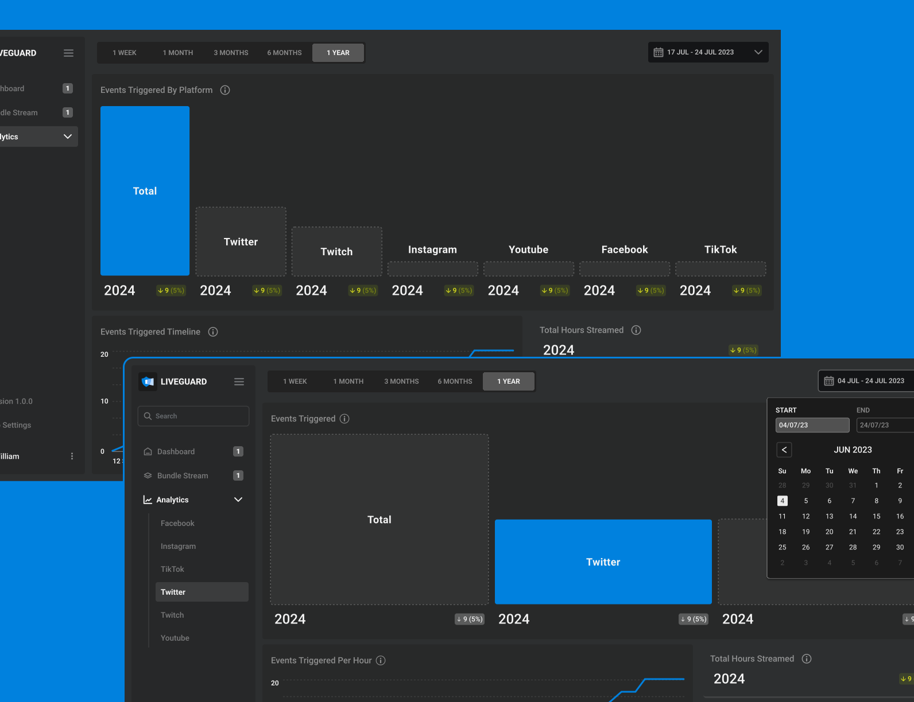
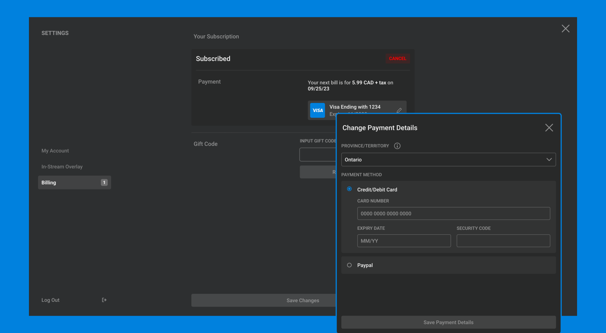

Although this project is near completion, there are still grounds left to cover in the design iteration cycle. After the designs are finalized (within the next few meetings), I'll conduct user tests with aquaintances who have experiences with streaming in order to improve the UX of the application.
This was a very interesting learning experience for me- it was the first time I was doing freelance work for a startup who had limited resources, and had to compromise on the features of the MVP due to this factor. If I was to to do this project all over again, I think I would've emphasised the importance of having clear guidelines set for the designer, so I would be able to design with the precise requirements in mind. While we may be able to use the first iteration's features in the future, it isn't guaranteed. Overall, LiveGuard is an awesome startup with a very cool application- please look forward to it in the future! Below are some highlights from the application, and the prototype.


